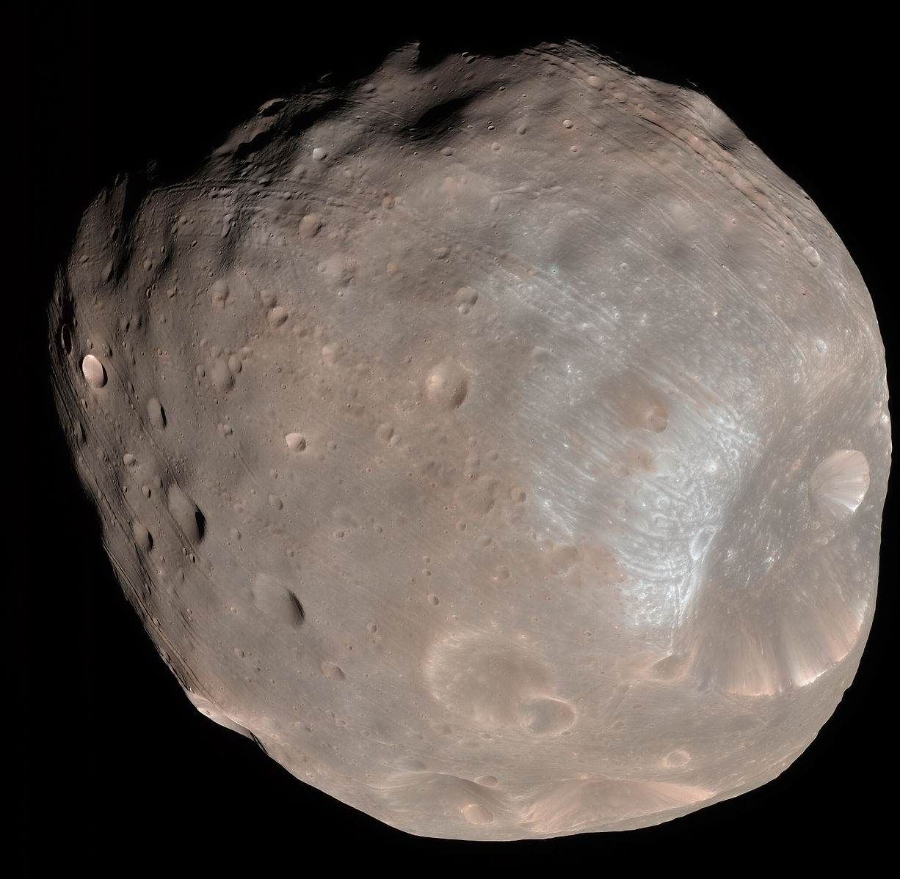
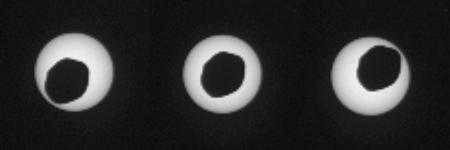

Moons

Mars Moon 1
Enhanced-color HiRISE image of Phobos, showing a series of mostly parallel grooves and crater chains, with its crater Stickney at right
- Diameter (km)
- 22.53 km
- Mass (kg)
- 2×1015 km
- Orbital period
- 11 h

Mars Moon 2
Enhanced-color HiRISE image of Deimos (not to scale), showing its smooth blanket of regolith.
- Diameter (km)
- 12.87 km
- Mass (kg)
- 10.8×1015 km
- Orbital period
- 30 h
Solar Transits

An observer situated on the Martian surface, in a position to observe Phobos, would see regular transits of the moon across the Sun. Several of these transits have been photographed by the Mars Rover Opportunity. During the transits, Phobos's shadow is cast on the surface of Mars; an event which has been photographed by several spacecraft. Phobos is not large enough to cover the Sun's disk, and so cannot cause a total eclipse.
Phobos orbits Mars 4 times faster than Deimos.